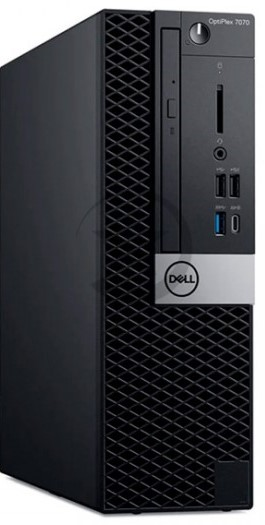
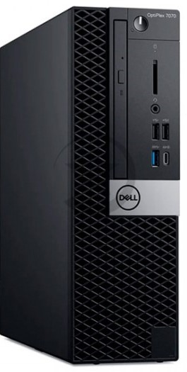
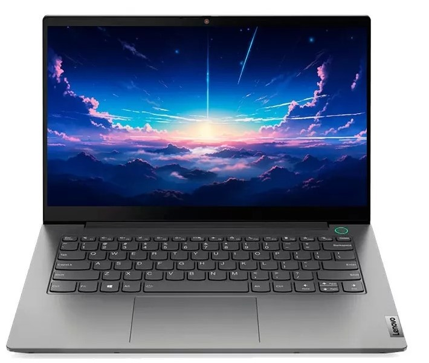

COMPUTADORAS EMPRESARIALES
Ofrecemos una amplia gama de computadoras empresariales para satisfacer las necesidades de tu hogar o negocio.

Ofrecemos una amplia gama de computadoras empresariales para satisfacer las necesidades de tu hogar o negocio.
Ofrecemos una amplia gama de laptops empresariales para satisfacer las necesidades de tu hogar o negocio.
